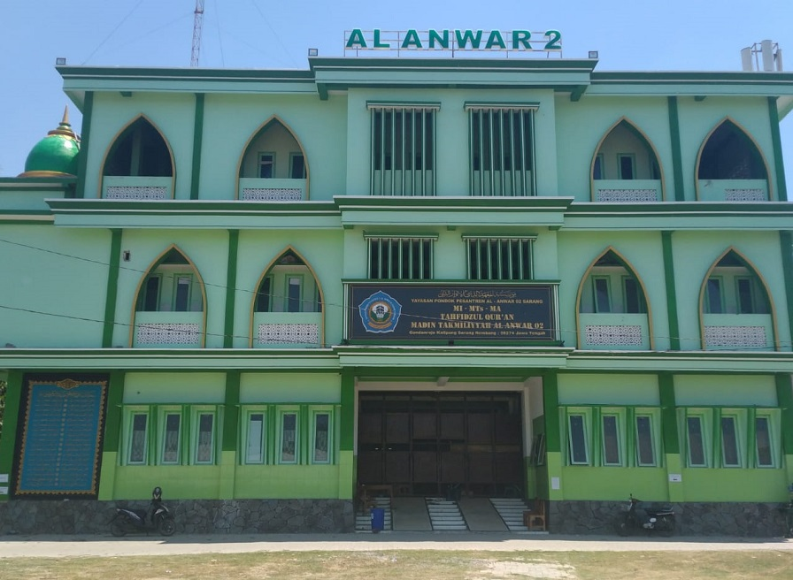

PONDOK PESANTREN
Pondok Pesantren adalah Lembaga keagamaan, yang memberikan agama islam. Pondok Pesantren pada dasarnya adalah sebuah asrama Pendidikan islam tradisional dimana siswanya tinggal bersama dan belajar dibawah bimbingan seorang atau lebih dari seorang guru yang dikenal dengan sebutan seorang Kyai. Peran Pondok Pesantren utamanya adalah sebagai Lembaga Pendidikan. Jika selain sebagai Lembaga Pendidikan Pondok Pesantren berperan sebagai Lembaga keagamaan, keilmuan, kepelatihan, dan pengembangan masyarakat.
Beberapa tempat Pondok Pesantren terbaik:
| Nama Pondok Pesantren | Lokasi |
|---|---|
| Pondok Pesantren Darussalam Gontor Ponorogo | Kabupaten Ponorogo, Jawa Timur |
| Pondok Pesantren Al-Anwar | Desa Karangmangu Sarang, Kabupaten Rembang Jawa Tengah |
| Pondok Pesantren Lirboyo Kediri | Desa Lirboyo, Kecamatan Mojokerto Kota Kediri |
| Pondok Pesantren Langitan Tuban | Kabupaten Tuban Jawa Timur |
Beberapa tips memilih Pondok Pesantren yang baik:
1. Sesuaikan Pesantren yang ingin dipilih dengan afiliasi kultural anda.
2. Perhatikan tipe, system, dan model pendidikan Pesantren.
3. Perhatikan Biaya pendidikannya.
4. Saran dan prasarana pesantren.
5. Perhatikan kegiatan formal dan informal pesantren.
